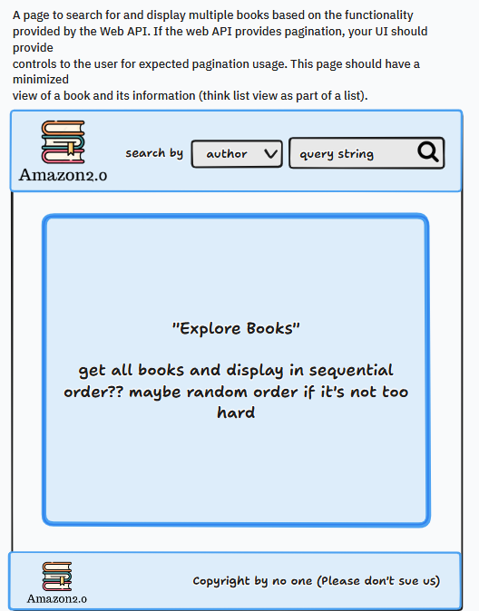
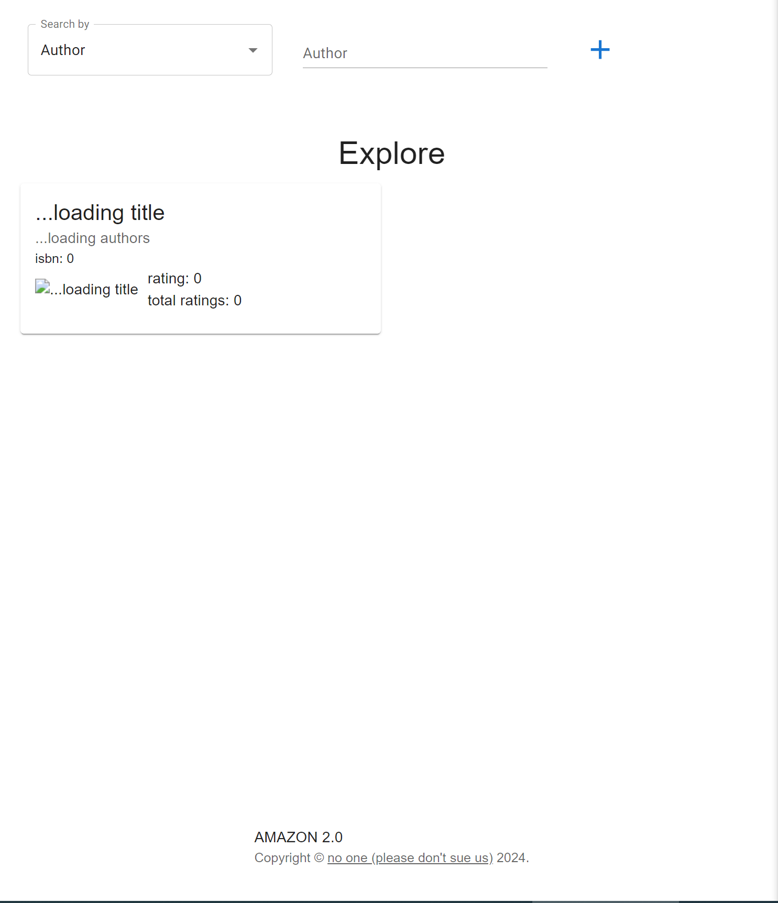
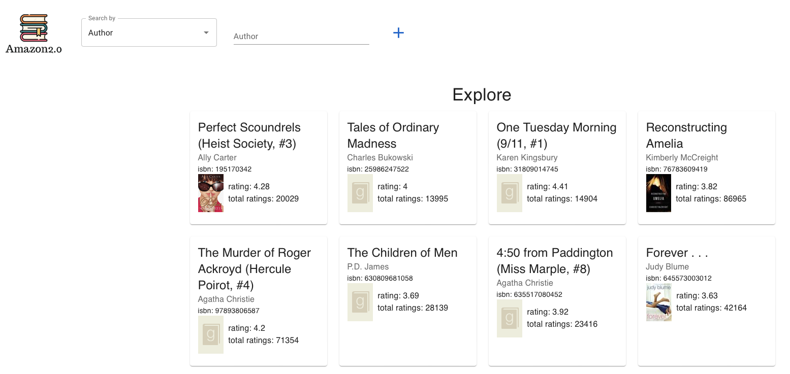
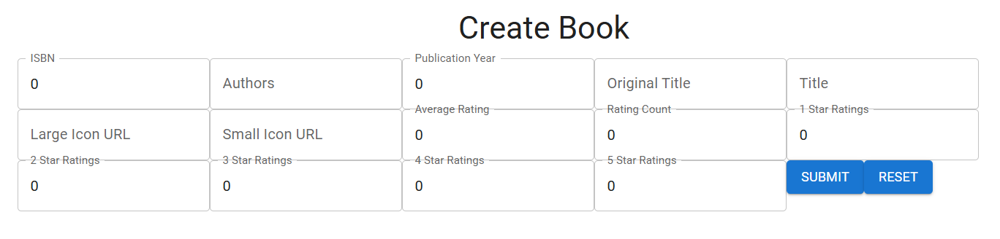
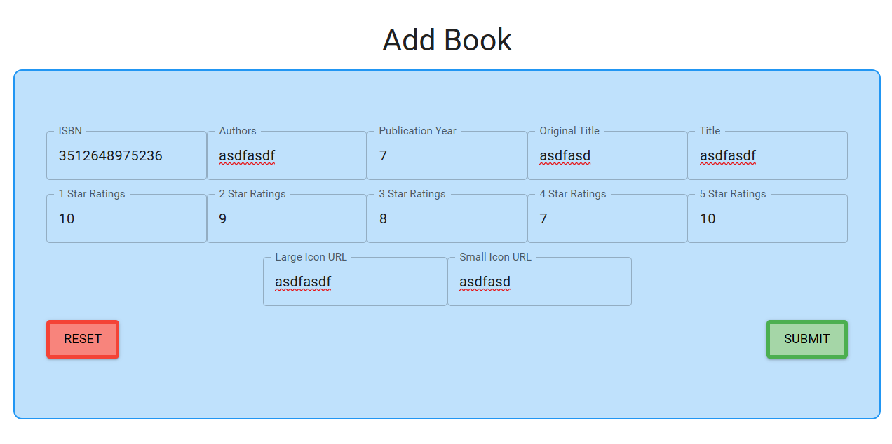
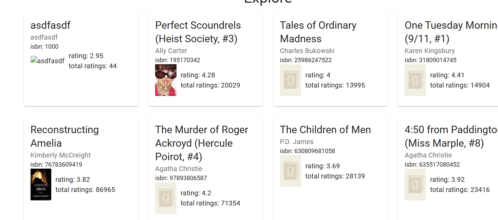
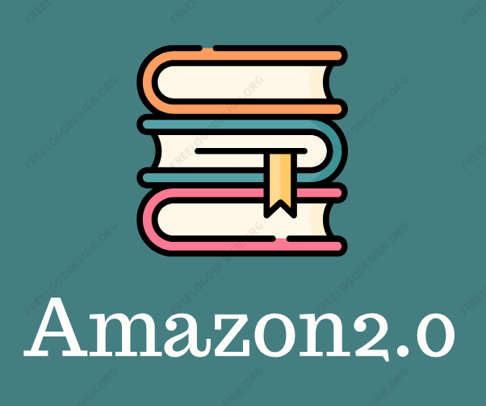

Case Study: Creating a Full-Stack Book Management Web Application
Spring 2024 | TCSS 460 Client/Server Programming for Internet Applications
Role: Full-Stack Developer
Tools Used: React, Next.js, Node.js, Express, PostgreSQL, Postman, ApiDoc.js, GitHub
Project Overview
As part of the TCSS 460 course, in collaboration, I completed a two-part group project aimed at building a fully functional, full-stack book management application. Our team was responsible for creating both the Web API (Back-End) and a React/Next.js front end that consumes that API.
This case study walks you step by step through both my work on the back-end and front-end sides, starting from the development of secure and well-documented API endpoints to implementing a friendly interface for interacting with the data.
The Problem
How do we design a secure, scalable, and well-documented Web API, and then build a seamless front-end interface that effectively interacts with it?
The project was divided into two major phases:
- Back-End: Create a fully functional Web API using Express and PostgreSQL with proper authentication, documentation, and testing.
- Front-End: Create a React/Next.js web application to allow users to interact with the API (view, search, add, and edit book records).
The Goal
Create a front-end interface with clear navigation and responsive design that supports viewing, searching, adding, and editing books using a secure, well-tested, and documented Web API.
My Role
As a full-stack developer, I worked on both phases of the project:
- Back-End:
- Designed and implemented secure API routes
- Developed complex filtering queries (search by title, author, rating, etc.)
- Wrote unit tests in Postman for every route
- Documented all API endpoints using ApiDoc.js and hosted it via GitHub Pages
- Front-End:
- Assisted in building core UI pages: Book Detail, Book List/Search, and Book Creation
- Integrated API calls using fetch and handled error responses
- Styled UI with consistent design and responsive layout
Process – Back-End Development & Documentation
We started by cloning a provided Express/Postgres template, which we expanded into a fully custom API. Our primary goal was to offer multiple ways to read, add, update, and delete book records securely.
Key Activities:
- Implemented routes:
- GET /books (with pagination)
- GET /books/isbn/:isbn13
- GET /books/title, /author, /rating
- POST /books to add a book
- PATCH /books/:isbn13 to update ratings
- DELETE /books/:isbn13 or by range
- Secured endpoints using credentialing middleware
- Used Postman to create test suites and validate route behavior
- Created API documentation with ApiDoc.js, including:
- Method descriptions
- Route parameters
- Success and error responses with status codes
- Hosted API docs via GitHub Pages for public access
Process – Front-End Development with React/Next.js
With a new Git repo and starting code, I built a front-end based on React to access the back-end API. The back-end API used in this part of the project belonged to another team. This was done to simulate the idea and implementation of how front-end developers collaborate with others' back-end without accessing code.
As we begain by creating a digital mockup as a reference to what the end goal looks like.
Digital mockup
Primary pages built:
- View Single Book: Displays full details, allows rating updates, and handles feedback
-
Search & View Multiple Books: Search by title, author, or rating with pagination and responsive layout

Inital explore page
Iteration of explore page
-
Create New Book: Form to add book, handled missing images, and ensured data consistency

Inital create book page
Iteration of create/add book page
Explore page with new book added
Other tasks included:
-
Logo for the user interface

Inital logo
Iterated logo
- Unified header/footer navigation across all pages
- Maintained design consistency using reusable components
- Focused on accessibility (semantic HTML, alt text, contrast)
Takeaways
What I Learned:
- How to work between front-end and back-end systems in real time
- The importance of thorough API documentation and unit testing
- How to design user flows that are both intuitive and backed by real data
- The role of iteration in debugging and refining usability
Skills Gained:
- Full-stack development using Node.js, Express, PostgreSQL, React, and Next.js
- REST API design, testing, and documentation
- Front-end development and UI/UX best practices
- Version control and collaboration via Git and GitHub
Reflection
This project taught me the value of building both sides of a system. I gained first-hand experience dealing with edge cases, data inconsistencies, and real-world communication challenges between front-end and back-end developers.
While the technical tasks were challenging, the biggest lesson came from aligning both systems into one cohesive product. Balancing the user’s experience with underlying system logic helped me grow as a thoughtful and flexible developer.